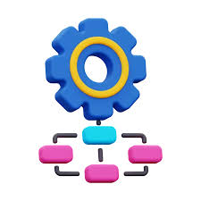

Workflow Builder
SVG & Angular-based workflow visualization tool.
A powerful tool for creating and visualizing workflows using SVG and Angular. It allows users to design workflows interactively.
View on GitHubDashboard

Responsive Dashboard with Tailwind
A responsive dashboard built with Tailwind CSS, featuring dynamic charts and data visualization.
View on GitHubGame-Based Learning
Interactive Angular games to learn concepts.
A set of interactive Angular-based games designed to make learning fun and engaging.
View on GitHub